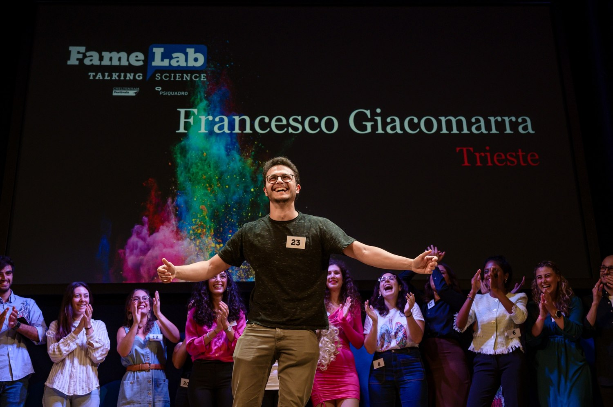

Trustworthy generative models
Controllable generation with diffusion and energy-based models, including property-guided sampling and methods for enforcing output-level specifications.
Postdoctoral Researcher
TU Wien · TrustCPS Group
Vienna, Austria
I am a postdoctoral researcher in the TrustCPS Group at TU Wien, working on trustworthy generative AI within the ROBUSTIFAI project. My research lies at the intersection of generative modeling, formal verification, and probabilistic methods. I am particularly interested in developing principled approaches to understand when generative models satisfy desired behaviors, and in improving their reliability and controllability.
I obtained my PhD in Applied Data Science and Artificial Intelligence from the University of Trieste in February 2026 (with honors), supervised by Luca Bortolussi and Francesca Cairoli. I enjoy collaborative, multidisciplinary research and am also actively involved in science communication.
Started research on trustworthy generative AI in the TrustCPS Group as part of the ROBUSTIFAI project.
Our work on guiding neuro-symbolic scenario generation with spatio-temporal logic appeared at AAMAS 2026.
Completed my PhD at the University of Trieste with the thesis Reliable and Controllable Generative Modeling.
My work connects expressive generative modeling with formal specifications and quantitative guarantees. I am particularly interested in:
Controllable generation with diffusion and energy-based models, including property-guided sampling and methods for enforcing output-level specifications.
Neural network verification, certifiable latent regions, and the relationship between model acceleration, distillation, and provable properties of generated outputs.
Statistical modeling and sampling for graph-structured data, with applications to infrastructure networks, synthetic data, and data-driven system simulation.
TrustCPS Group, Vienna, Austria · Research on trustworthy generative AI within the ROBUSTIFAI project.
CPS-VIDA Lab, Los Angeles, USA · Research on safety-critical autonomous driving scenario generation under the supervision of Prof. Jyotirmoy V. Deshmukh.
With honors (cum laude). Supervisors: Prof. Luca Bortolussi and Prof. Francesca Cairoli. Thesis: Reliable and Controllable Generative Modeling.
Amsterdam, Netherlands · Synthetic power-network generation using random graph theory and Monte Carlo methods, supervised by Prof. Alessandro Zocca.
Mathematics for Data Science curriculum · 110/110 cum laude.
110/110 cum laude.
STRELGen: spatio-temporal-logic guidance for realistic, safety-critical multi-agent driving scenarios.
Formal certification of latent regions for specification-compliant planning with pretrained generative models.
Accessible AI literacy materials and hands-on generative AI activities for secondary school students.
Statistical generation of synthetic connected power-grid topologies using exponential random graph models.
Score-based surrogate modeling and constraint-driven conditional generation for stochastic systems.
Ongoing methodological research and applications to autonomous systems, infrastructure and industrial planning.
Research on verification and robustness of generative AI, with an emphasis on dependable behavior in cyber-physical systems.
Understanding how certification, model compression, and guided sampling can work together for efficient, reliable generation.
Neuro-symbolic generation of safety-critical autonomous driving scenarios through differentiable spatio-temporal logic guidance.
Generating connected and statistically realistic transmission-grid topologies with exponential random graph models.
Applied modeling of complex operations, from port traffic simulation to industrial production scheduling and what-if analysis.
Science communication and teaching are an important part of my academic life. I enjoy making complex ideas in mathematics and AI engaging and accessible to wider audiences.

Science communication
I was the FameLab Italy National Champion (2023) and subsequently won the Audience Award at the FameLab International Final. At FameLab, participants are challenged to explain scientific ideas to non-specialist audiences in just three minutes.
My presentations focused on explaining how generative artificial intelligence works through accessible examples and live audience interaction.
Co-supervised a BSc thesis at the University of Trieste on synthetic graph generation (2025). Coordinated and supported student tutoring activities at Trieste (2024–2025), and served as a calculus tutor at the University of Padua (2020–2021).
Co-authored Demystifying Generative AI: A Pedagogical Approach, presenting educational activities aimed at making generative AI more understandable to secondary-school students.
Program Committee member for AAMAS 2027. Reviewer for AAMAS, L4DC, IEEE Transactions on Neural Networks and Learning Systems, IEEE Transactions on Automation Science and Engineering, and Physical Review E; subreviewer for ECAI.
For research questions, potential collaborations, or academic inquiries:
francesco.giacomarra@tuwien.ac.at
TU Wien profile · GitHub · DBLP · Download CV